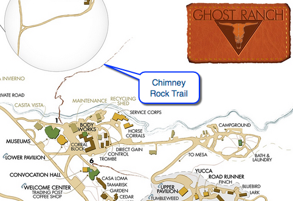

Ghost Ranch Chimney Rock Trail



- Feb 13, 2014: Trail starts up from the visitor center area
- Feb 13, 2014: Beautiful views along the way
- Feb 13, 2014: Only halfway up!
- Feb 13, 2014: Bill looks ahead to the goal
- Feb 13, 2014: Looking towards the water
- Feb 13, 2014: Looking out from the top
- Feb 13, 2014: Bill and Paget take in the Pedernal
- https://www.flickr.com/photos/139088815@N08/27862267776/in/album-72157667485914153
- https://www.flickr.com/photos/139088815@N08/27820577011/in/album-72157667485914153
- https://www.flickr.com/photos/139088815@N08/27618910270/in/album-72157667485914153
- https://www.flickr.com/photos/139088815@N08/27285049504/in/album-72157667485914153
- https://www.flickr.com/photos/139088815@N08/27284762193/in/album-72157667485914153
- https://www.flickr.com/photos/139088815@N08/27820569071/in/album-72157667485914153
- https://www.flickr.com/photos/139088815@N08/27862246636/in/album-72157667485914153
Ghost Ranch has many attractions, including beautiful views, interesting and educational events, and some great hiking trails. The Chimney Rock trail begins close to the Welcome Center and ascends the nearby hill leading to the namesake rock. Along the way, there are lovely views of the canyon. On the top of the rock, one can gain wonderful panoramas of the surrounding area, including the nearby reservoir and the well-known Pedernal, Georgia O'Keef's beloved mound. While there are some links about Chimney Rock, use the "Ghost Ranch" qualifier to make sure you don't leave the state! Ghost Ranch Org has a listing of hikes at Ghost Ranch, but not a lot of detail.